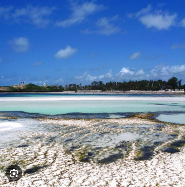

Fun, Adventure & Relaxation Along Kenya's Coast

Bamburi Beach is located on the north coast of Mombasa. It is famous for its white sandy beaches, clear blue waters, luxury beach resorts, exciting nightlife, and family-friendly atmosphere. It is one of the most visited beaches in Kenya.
Visit between July and March for sunny weather, warm ocean waters, and ideal beach activities.
| Package | Price |
|---|---|
| Beach Day Tour | From KSh 1,500 |
| Haller Park Tour | From KSh 2,000 |
| Photography Session | FREE |